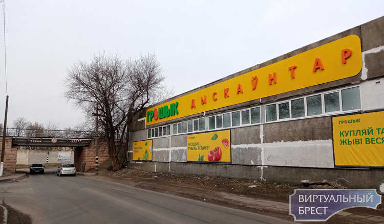

Грошик

Долгожданная хорошая новость для жителей города Бреста! На улице Лейтенанта Рябцева, 80 открыл свои двери дискаунтер «Грошык». Данные дискаунтеры покупатели полюбили за возможность приобретать товары ежедневного спроса по невероятно низким ценам. Все дело в том, что «Грошык» устанавливает низкие цены за счет минимизации расходов на логистику и персонал.
Дискаунтер занимает солидные 540 квадратных метров торговой площади. Самое важно, что его планировка выделяет под выкладку товаров наибольшую часть пространства. В дискаунтере можно приобрести бакалею, овощи и фрукты, хлебобулочные
изделия, молочную и мясную продукцию, детские и хозяйственные товары – словом, все самое необходимое по выгодной стоимости. Также стоит особенно отметить, что в «Грошыке» покупатели найдут большое количество товаров от белорусских производителей. Всего же в дискаунтере представлено более полутора тысяч различных товаров.
Время работы нового «Грошыка» – с 9:00 до 22:00.
К слову, это уже четвертый дискаунтер данной сети, который работает в городе Бресте. Брестчане полюбили формат жесткого дискаунтера за очень низкие цены, достойный ассортимент и быстрое обслуживание.
Главная
Следующая